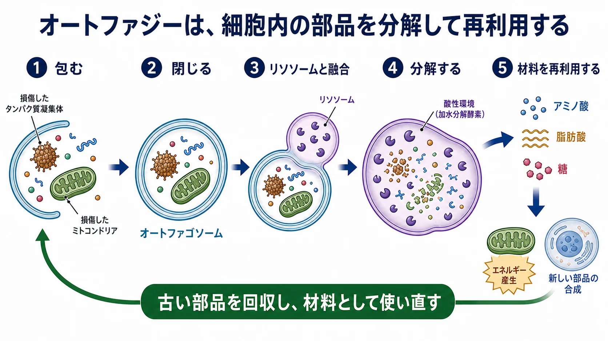
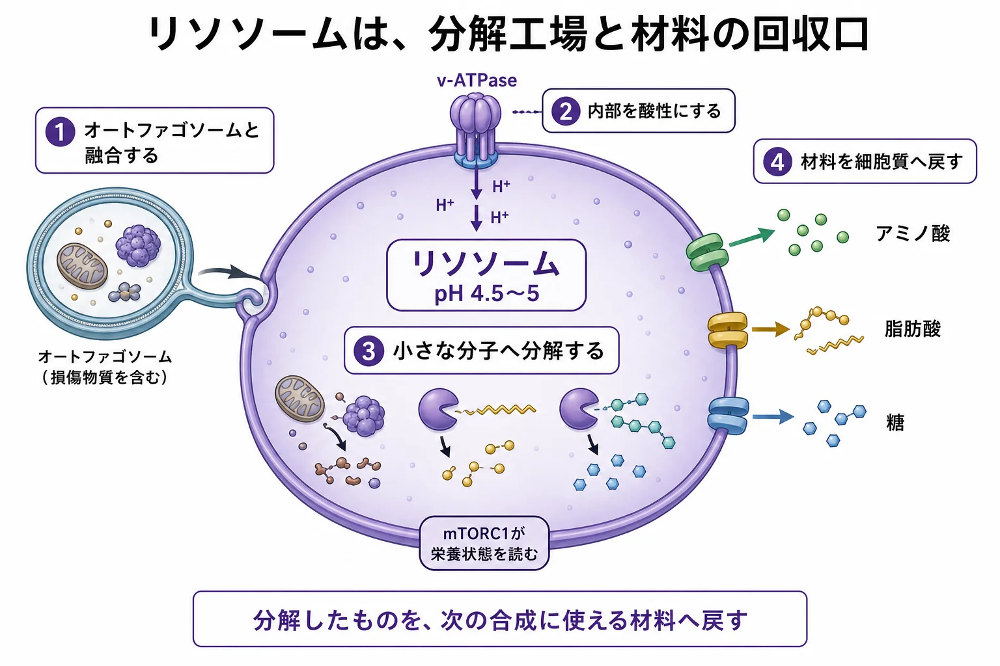
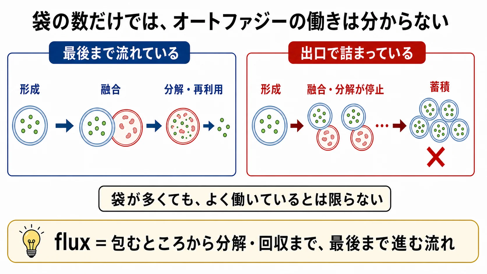

基礎 ／ 掃除と作り直し
オートファジーとリソソーム
公開 2026-08-31
細胞の中では、タンパク質やオルガネラが働き続けるうちに古くなり、傷んでいきます。autophagy（オートファジー）は、それらを回収してlysosomeへ運び、分解して、材料として再利用する仕組みです。この章では、細胞内のリサイクルがどのように進み、なぜ皮膚や加齢にも関係するのかを見ます。
先に読んでおく章：lysosomeというオルガネラ（→ オルガネラ）／栄養状態によって合成とautophagyを切り替えるmTORC1（→ mTORC1――タンパク質合成を調節する仕組み）
この章の一言
細胞は、古くなった部品を分解し、回収した材料で新しい部品を作ることで、細胞内の品質を保っています。

1 オートファジーは、細胞内のリサイクル
autophagyは、ギリシャ語の「自分」を意味する auto と、「食べる」を意味する phagein に由来します。細胞が自分の中身の一部を分解するため、「自食作用」と訳されます。
ただし、目的は単に壊すことではありません。主な役割は、次の三つです。
- エネルギーや材料を確保する：分解して生じたアミノ酸・脂肪酸・糖を、エネルギー産生や新しい細胞成分の合成に使う。
- 細胞内の品質を保つ：傷んだタンパク質やオルガネラを取り除き、細胞内に溜めない。
- ストレス下で細胞の生存を支える：飢餓時には細胞内の成分から材料を回収し、酸化ストレスなどで傷んだ成分を除去する。
特に、タンパク質の大きな凝集体や、傷んだミトコンドリアなどのオルガネラは、そのままでは処理できません。autophagyは、これらを膜でまとめて包み、lysosomeへ運びます。
細胞には、ほかにも品質を保つ仕組みがあります。
| 対処するもの | 主な仕組み | 何をするか |
|---|---|---|
| 形が崩れかけたタンパク質 | chaperone（HSP） | 正しい形に折り直す |
| 不要になった個々のタンパク質 | ubiquitin–proteasome系 | 目印を付けて一つずつ分解する |
| 大きな凝集体やオルガネラ | autophagy–lysosome系 | 膜で包み、まとめて分解する |
これらが協力して、細胞内のタンパク質やオルガネラの品質を保っています。この状態をproteostasis（タンパク質恒常性）と呼びます（→ Hallmarks of Aging）。
粗面ERでは、折り損じたタンパク質が増えるとER stressを感知し、UPRによって折りたたみと分解の能力を高めます。ERADで一本ずつ処理できない凝集体や、傷んだER膜の一部は、autophagyがlysosomeへ運びます（→ オルガネラ）。
熱刺激で誘導されるHSP70・HSP47と美容デバイスとの関係は熱・光・機械刺激、collagen専用chaperoneであるHSP47の働きは線維芽細胞とコラーゲンで扱います。
2 包んで運び、lysosomeで分解する
この章で扱うのは、細胞質の一部を二重膜で包むmacroautophagyです。一般に「autophagy」と言うと、この仕組みを指します。
流れは、次の五つです。
つまり、autophagosomeは包んで運ぶ袋であり、実際に分解する場所はlysosomeです。包むだけでは、リサイクルはまだ終わっていません。
3 lysosomeは、分解工場と材料の回収口
lysosome（リソソーム）は、不要なものを捨てるだけの袋ではありません。分解したものから材料を回収し、細胞質へ戻すリサイクル工場です。
- 内部を酸性にする：膜にあるv-ATPaseがH⁺を汲み入れ、内部をpH 4.5〜5前後に保ちます。
- 分解する：酸性環境で働く酵素が、タンパク質・脂質・糖・核酸を分解します。
- 材料を戻す：分解産物を輸送体から細胞質へ戻し、エネルギー産生や合成に再利用します。

lysosomeの膜の外側には、栄養状態を受け取るmTORC1も集まります。lysosomeは、分解と材料回収の場所であると同時に、細胞が「いま材料は足りているか」を判断する場所でもあります（→ mTORC1――タンパク質合成を調節する仕組み）。
酸性化、autophagosomeとの融合、酵素による分解、材料の排出のどこかが止まれば、リサイクルは途中で滞ります。
4 食後は作り、空腹時には分解して再利用する
食後はアミノ酸とインスリンが増え、mTORC1の活性が高まりやすくなります。すると、タンパク質や脂質を作る方向が優先され、autophagyは抑えられます。これは成長や組織の修復に必要な、正常な反応です。
空腹の時間が続くと、食事から入るアミノ酸とインスリンが減ります。細胞内のエネルギーが不足するとAMPKも働き、mTORC1の活性が下がります。するとautophagyが始まりやすくなり、細胞内の成分から材料を回収します（→ AMPKとmTORC1――エネルギーと材料の使い方を調節する）。
大切なのは、mTORC1とautophagyのどちらか一方を常に働かせることではありません。栄養が入ったら作り、空腹時には分解して再利用する。細胞は、状態に応じて二つを切り替えています。
5 必要なものを選んで回収することもできる
autophagyは、細胞質の一部をまとめて取り込む場合と、特定の対象を選んで取り込む場合があります。
| 回収するもの | 呼び方 | この先の章 |
|---|---|---|
| 傷んだミトコンドリア | mitophagy | → ミトコンドリア品質管理 |
| タンパク質の凝集体 | aggrephagy | proteostasisに関係する |
| 小胞体の一部 | ER-phagy | ERの量と品質を調節する |
| 脂肪滴 | lipophagy | 脂質を分解へ回す |
選択できるのは、回収する対象とautophagosomeの膜をつなぐcargo receptor（積み荷受容体）があるからです。たとえばp62/SQSTM1は、目印の付いたタンパク質と膜を橋渡しします。個々のcargo receptorの名前を覚えるより、必要なものを選んでlysosomeへ届ける仕組みがあると理解することが大切です。
6 fluxは、リサイクルが最後まで進んでいるかを見る考え方
autophagyの働きを評価するとき、autophagosomeの数だけを見ても、リサイクルが順調かどうかは分かりません。autophagosomeが多く見える場合には、二つの可能性があります。
- 次々に作られ、lysosomeで順調に処理されている。
- 作られたものの、融合や分解が止まり、途中で溜まっている。
この二つを区別するには、包むところから、lysosomeでの分解と材料回収まで、すべての工程が進んでいるかを見る必要があります。この一連の流れを、autophagic flux（オートファジー・フラックス）と呼びます。

autophagosomeの数は、途中の一場面です。fluxは、入口から出口までの流れを見ます。
7 なぜ皮膚とlongevityに関係するのか
細胞が働き続けるあいだ、タンパク質やオルガネラには少しずつ損傷が生じます。autophagyは、それらを回収して細胞内の品質を保つ仕組みです。加齢に伴ってautophagyの働きは低下する傾向があり、分解と再利用の滞りは、加齢性変化や疾患との関連が研究されています（PMID 34507801）。
皮膚は、紫外線・酸化ストレス・熱・病原体などに繰り返しさらされます。autophagyは、keratinocyteの分化とmelanosomeの分解、melanocyteのストレス応答と生存、fibroblastの細胞内品質とECMの維持に関係します（PMID 31417903、PMID 36230960）。
過栄養では、インスリン・IGF-1からmTORC1へ届く刺激が高まり、autophagyとの切り替えが乱れることがあります。反対に、絶食やrapamycinなど、longevity研究で注目される介入の一部は、mTORC1とautophagyに作用します。ただし、autophagyに関係することと、健康な人の寿命延長や美容効果が証明されていることは別です。介入の評価は後の章で扱います（→ AMPKとmTORC1――エネルギーと材料の使い方を調節する、senolytic・mitophagy関連介入）。
この章の到達点
- autophagyは、古くなったタンパク質やオルガネラを分解し、材料を再利用することで、細胞内の品質とストレス下の生存を支える仕組みである。
- autophagosomeは対象を包んで運び、lysosomeが酸性環境で分解する。
- lysosomeは、分解工場であると同時に、材料の回収口と栄養感知の場でもある。
- 食後は合成が進み、空腹時には分解と再利用が進みやすい。mTORC1とautophagyは、状態に応じて切り替わる。
- fluxは、包むところから分解・回収までが最後まで進んでいるかを評価する考え方である。
次のミトコンドリア品質管理では、この仕組みをミトコンドリアに当てはめます。傷んだミトコンドリアを選んで回収するautophagyが、mitophagyです。